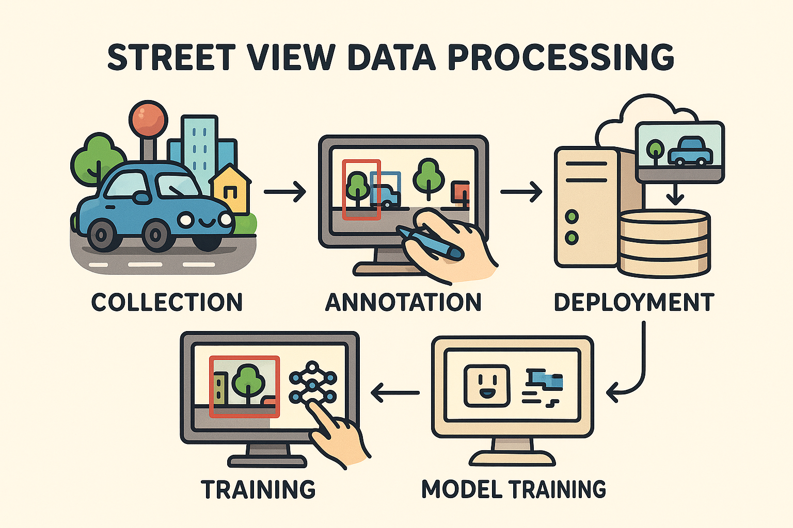

Projects 项目

Air Pollution and Population Exposure 空气污染与人口暴露
Timeline: 05.2025 - 06.2025
This WebGIS-based project provides a comprehensive analysis and visualization of air pollution (NO₂, PM2.5, PM10) across Greece. It features an interactive map built with OpenLayers, multi-page presentation, and detailed data analysis. 这是一个基于WebGIS的希腊空气质量分析与监测项目，对希腊全境的空气污染（NO₂、PM2.5、PM10）进行综合分析与可视化。项目包含一个使用OpenLayers构建的交互式地图、多页面展示以及详细的数据分析。

Urban Environment Analysis Using Street View Imagery 基于街景图像的城市环境分析
Timeline: 04.2025 - Present
This project leverages computer vision and deep learning techniques to analyze urban environments through street view imagery. By processing thousands of street-level images, we developed models to automatically identify and quantify urban features such as greenery coverage, building facades, and pedestrian infrastructure. The results provide valuable insights for urban planning, environmental assessment, and quality of life studies in metropolitan areas. 该项目利用计算机视觉和深度学习技术通过街景图像分析城市环境。通过处理数千张街道级图像，我们开发了模型来自动识别和量化城市特征，如绿化覆盖率、建筑立面和行人基础设施。研究结果为城市规划、环境评估和大都市地区生活质量研究提供了宝贵的见解。
Geographic Text Mining and Analysis with NLP 基于自然语言处理的地理文本挖掘与分析
Timeline: 02.2025 - Present
This ongoing research explores the application of Natural Language Processing techniques to extract geographic information from unstructured text data. The project combines transformer-based language models with geographic information systems to identify spatial patterns and relationships in large text corpora. Applications include place name recognition, sentiment analysis of location descriptions, and automated extraction of geographic relationships from news articles and social media. 这项正在进行的研究探索了将自然语言处理技术应用于从非结构化文本数据中提取地理信息。该项目将基于transformer的语言模型与地理信息系统相结合，以识别大型文本语料库中的空间模式和关系。应用包括地名识别、位置描述的情感分析以及从新闻文章和社交媒体中自动提取地理关系。

30DayMapChallenge Featured Map Creation - Chinese Ink Painting Series 30DayMapChallenge精选地图创作 - 水墨丹青系列
Timeline: 11.2022
My "Chinese Ink Painting Series" stood out in the global 30DayMapChallenge competition, receiving 132 likes and ranking 5th in the Day 30 - Remix category. This series integrates traditional Chinese ink painting styles with modern cartographic techniques, focusing on China's Five Great Mountains to showcase the perfect blend of Chinese culture and geographic information science. 我的"水墨丹青系列"作品在全球30DayMapChallenge比赛中脱颖而出，Day 30 - Remix主题下获得了132个赞，名列第5位。这一系列作品融合了中国传统水墨画风格与现代地图制图技术，以中国五岳为主题，展现了中华文化与地理信息科学的完美结合。

Analysis of the Spatial and Temporal Evolution of Drought Disasters and their Trends in the Jianghuai Watershed 江淮流域干旱灾害时空演变及趋势分析
Timeline: 01.2021 - 05.2021
This study investigated the spatial-temporal evolution and trends of drought in the Jianghuai Watershed region (1958-2018) using multi-scale Standardized Precipitation Evapotranspiration Index (SPEI). Key methods included M-K tests, wavelet analysis, EOF, and R/S analysis, revealing patterns in interannual/seasonal SPEI, mutation characteristics, periodicity, and future trends. 本研究利用多尺度标准化降水蒸散指数(SPEI)研究了江淮流域地区(1958-2018年)干旱的时空演变和趋势。主要方法包括M-K检验、小波分析、EOF和R/S分析，揭示了年际/季节SPEI的变化模式、突变特征、周期性和未来趋势。
Spatial-temporal pattern mining of PM2.5 pollution in China and analysis of its driving mechanisms 中国PM2.5污染时空模式挖掘及驱动机制分析
Timeline: 12.2020 - 05.2021
Research conducted at the Geoinformation Lab of Chuzhou University, utilizing 3D GIS technology and the space-time cube model. The project employed spatial-temporal hotspot data analysis methods to examine the evolution trends and distribution patterns of PM2.5 in China, and analyzed impacts of natural and socio-economic factors using Geodetector and Geographically Weighted Regression models. 研究在滁州学院地理信息实验室进行，利用三维GIS技术和时空立方体模型。该项目采用时空热点数据分析方法，研究了中国PM2.5的演化趋势和分布模式，并使用地理探测器和地理加权回归模型分析了自然和社会经济因素的影响。